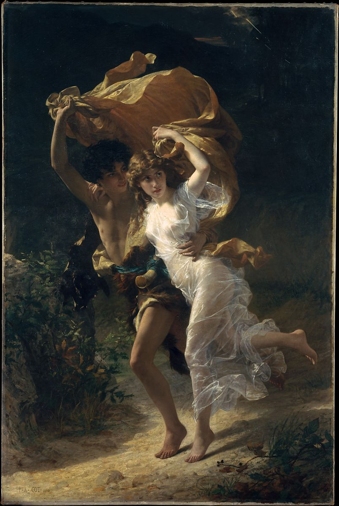

<head>
<meta charset="UTF-8" />
<meta name="keywords" content="drawing, painting" />
<meta name="description" content="drawings by Sunjy" />
<title>Sunjy</title>
<link rel="shortcut icon" type="image/x-icon" href="../../mImages/mCommon/favicon.ico" media="screen" />
<link rel="stylesheet" type="text/css" href="../../mCsses/mCommon/mCssA.css" />
<link rel="stylesheet" type="text/css" href="../../mCsses/mCommon/mCssB.css" />
<link rel="stylesheet" type="text/css" href="../../mCsses/mCommon/mCssC.css" />
<link rel="stylesheet" type="text/css" href="../../mCsses/mCommon/mCssD.css" />
<link rel="stylesheet" type="text/css" href="../../mCsses/mContent/mCssA.css" />
<link rel="stylesheet" type="text/css" href="../../mCsses/mContent/mCssB.css" />
<link rel="stylesheet" type="text/css" href="../../mCsses/mContent/mCssC.css" />
<link rel="stylesheet" type="text/css" href="../../mCsses/mContent/mCssD.css" />
</head>
<script type="text/javascript" src="../../mScripts/mContent/mContentAA.js" /></script>
<script type="text/javascript" src="../../mScripts/mContent/mContentAB.js" /></script>
<script type="text/javascript" src="../../mScripts/mContent/mContentAC.js" /></script>
<script type="text/javascript" src="../../mScripts/mContent/mContentAD.js" /></script>
<script type="text/javascript"></script> 
<script type="text/javascript">
document.write('<div class="mImgAbsolute"></div>');
/*
document.write('<p class="mFontSizeBColor" />From a white paper...</p>');
document.write('<table class="center"><tr><td>');
document.write('');
document.write('</td></tr></table>');
*/
</script>


<script type="text/javascript">
document.write('<p class="mFontSizeBColor" />The Storm</p>');
document.write('<p class="mFontSizeSColor" />By Pierre-Auguste Cot, 1880. When Cot exhibited this painting at the Salon of 1880, critics speculated about the source of the subject. Some proposed the French novel <i>Paul and Virginie</i> by Bernardin de Saint-Pierre, in which the teenage protagonists run for shelter in a rainstorm, using the heroine’s overskirt as an impromptu umbrella; others suggested the romance Daphnis and Chloe by the ancient Greek writer Longus. New York collector and Metropolitan Museum benefactor Catharine Lorillard Wolfe commissioned the work under the guidance of her cousin John Wolfe, one of Cot&#39;s principal patrons. Like the artist’s earlier <i>Springtime</i>, it was immensely popular and extensively reproduced.</p>');
document.write('<table class="center" /><tr><td>');
document.write('Paul and Virginie</i> by Bernardin de Saint-Pierre, in which the teenage protagonists run for shelter in a rainstorm, using the heroine’s overskirt as an impromptu umbrella; others suggested the romance Daphnis and Chloe by the ancient Greek writer Longus. New York collector and Metropolitan Museum benefactor Catharine Lorillard Wolfe commissioned the work under the guidance of her cousin John Wolfe, one of Cot&#39;s principal patrons. Like the artist’s earlier <i>Springtime</i>, it was immensely popular and extensively reproduced." />');
document.write('</td></tr></table>');
</script>


